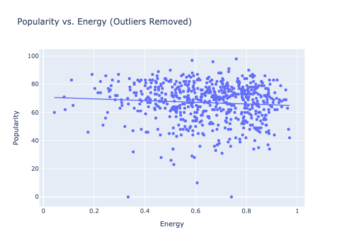
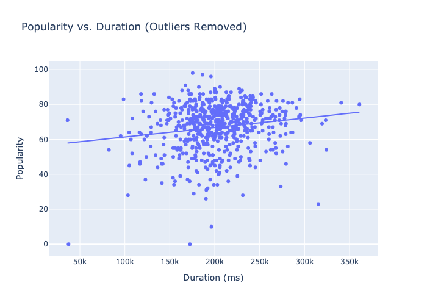

This project explores the relationship between popularity and duration of songs recorded on Spotify. The dataset includes various songs by multiple artists, along with metrics such as duration, energy, danceability, loudness, and average popularity scores. Using Python Pandas and Plotly, and javascript. I attempted to answer 3 questions:
1. Based on this dataset what is the ranked list of artists by popularity?
2. What is the relationship between popularity and energy?
3. What is the relationship between popularity and duration?
The dataset includes various songs by multiple artists, along with metrics such as duration, energy, danceability, loudness, and average popularity scores. The popularity scores range from 0 to 100, indicating the average popularity of each artist based on their recorded songs.
Conclusion: At the time of this dataset "The Weeknd" was the #1 most popular artist
The relationship between popularity and energy is explored by plotting the average popularity scores against the energy levels of the artists’ songs. Energy levels range from 0 to 1, where lower values indicate a more relaxed feel and higher values indicate a more intense and energetic feel.
 Click to view interactive scatter plotConclusion: Suprisingly, based on this dataset, there is a slight correlation between lower energy and more popularity. Though it is in the margin of error, it is still noticable.
The analysis of popularity against song duration examines how the length of songs (measured in milliseconds) impacts their average popularity scores. This relationship can reveal whether shorter or longer songs tend to be more popular. For instance, if shorter songs show higher popularity, it might suggest that audiences prefer quick, catchy tunes. Alternatively, longer songs may indicate deeper engagement when they resonate well with listeners.
 Click to view interactive scatter plotConclusion: longer songs tend to be more popular.